Quels musées visiter en Île-de-France ?
Peinture, histoire de Paris, mode, arts asiatiques ou grandes collections : choisissez un musée selon ce que vous voulez découvrir, et non seulement selon sa notoriété. La sélection ci-dessous distingue les lieux déjà documentés de ceux dont les informations pratiques doivent encore être vérifiées.
Pour comprendre une ville et son histoire
Musée Carnavalet
Paris, ses transformations et la vie de ses habitants, racontées par ses collections.
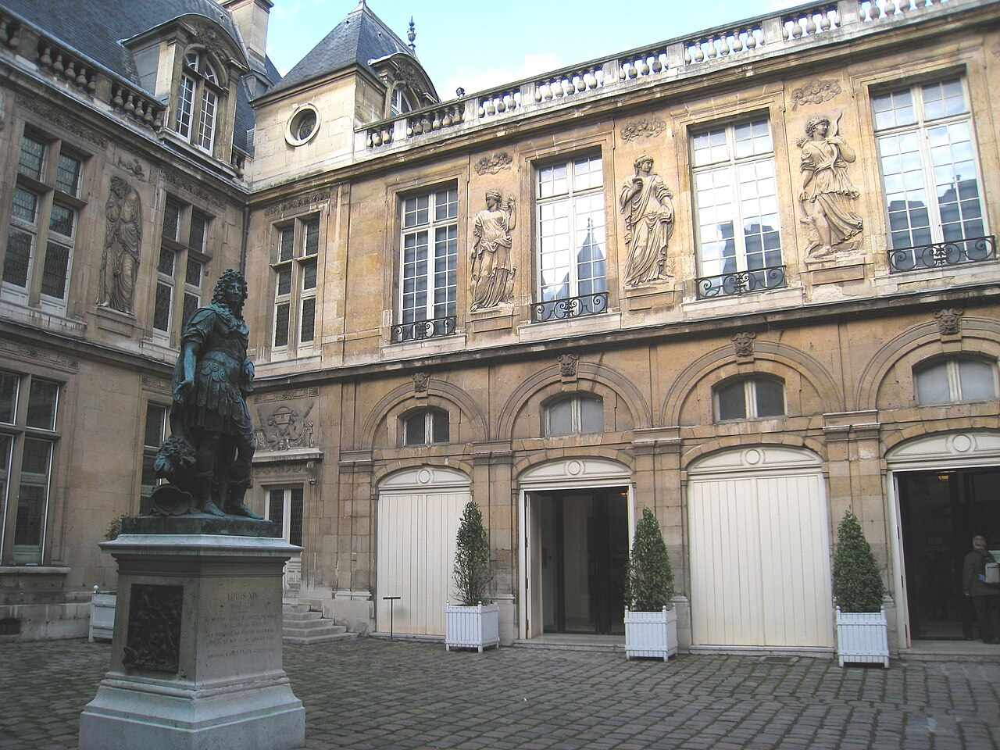

Musée du Louvre
Une grande diversité de civilisations et de disciplines ; la visite gagne à se concentrer sur quelques départements.
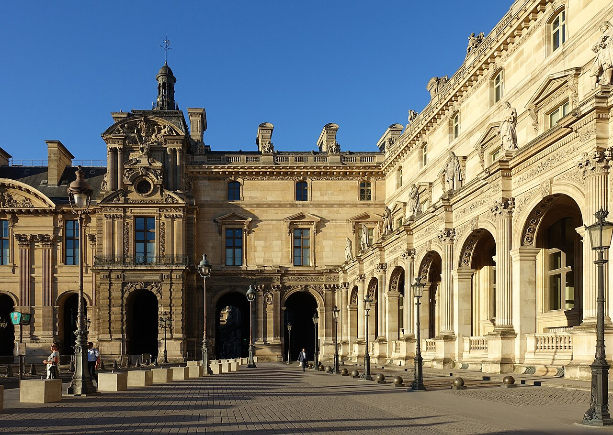

Musée de l’Homme
Pour aborder l’histoire humaine et les connaissances qui la documentent.
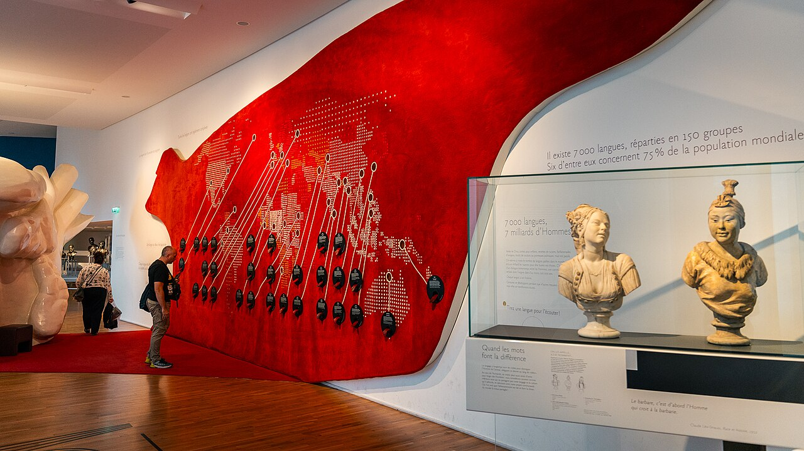

Pour regarder les œuvres sous des angles différents
Musée d’Orsay
Une visite centrée sur les transformations artistiques du XIXe siècle et du début du XXe.
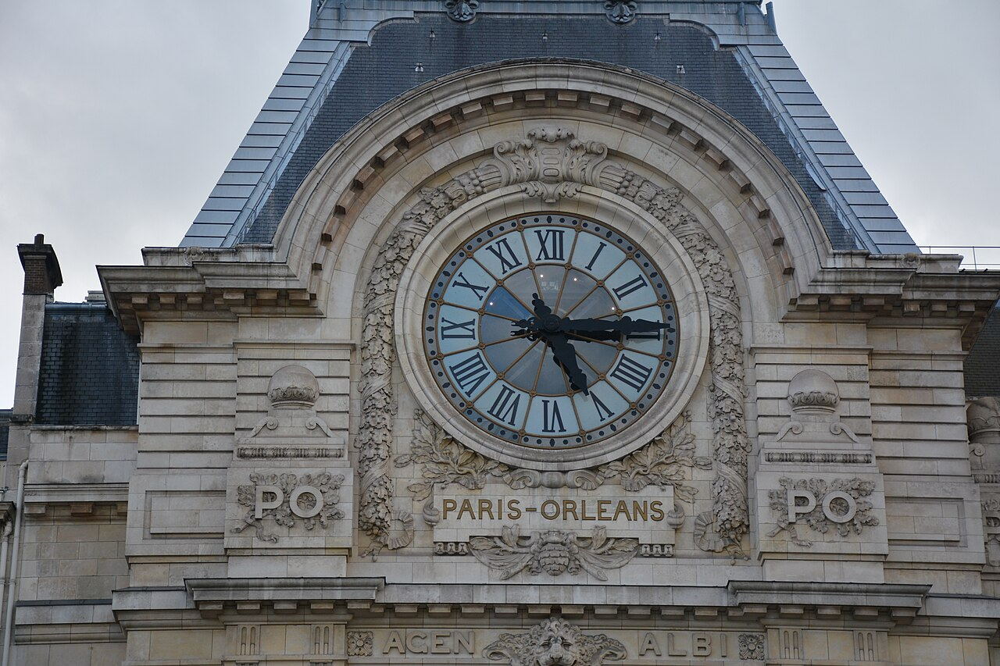

Petit Palais
Peinture, sculpture et arts décoratifs, dans un édifice créé pour l’Exposition universelle de 1900.
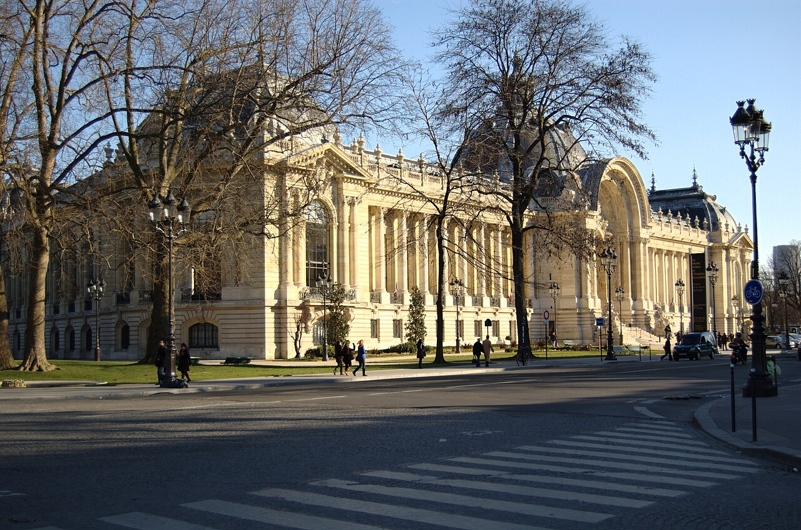

Musée d’Art Moderne de Paris
Pour découvrir des œuvres, des courants et des questions propres aux arts modernes.
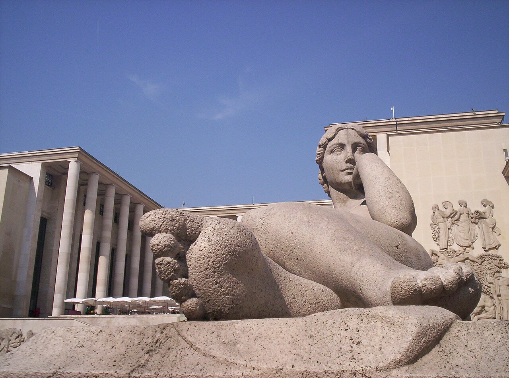

Musée Cernuschi
Un regard sur les arts asiatiques à partir d’une collection municipale spécialisée.
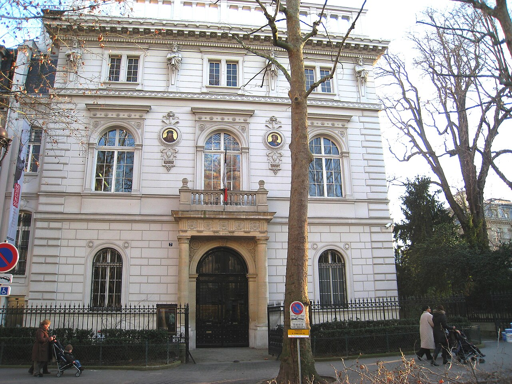


Pour explorer des collections plus spécialisées
Palais Galliera
L’évolution du vêtement, des formes et des usages sociaux à travers les collections et les expositions.
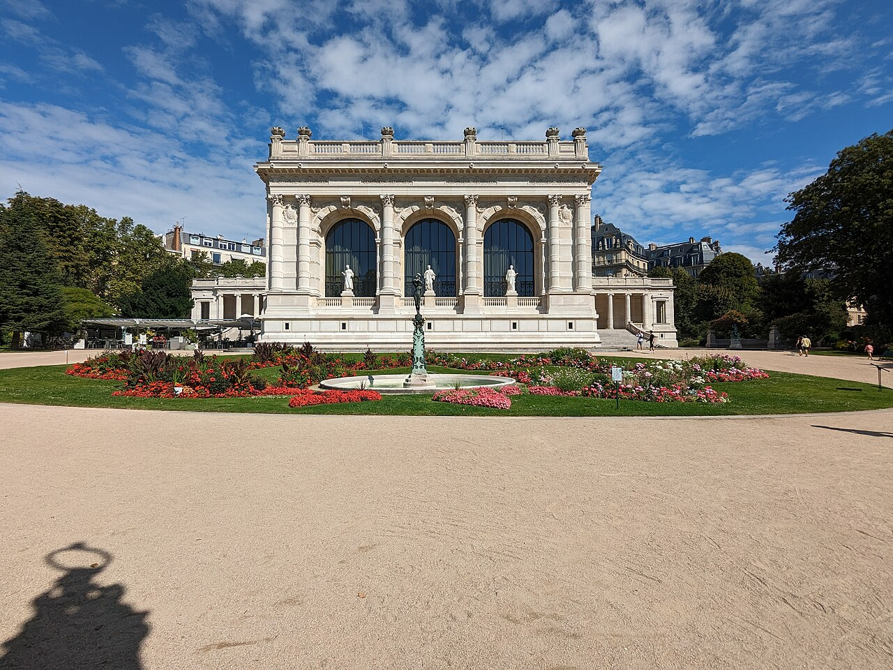

Musée Bourdelle
Une rencontre avec la sculpture et l’environnement de travail d’un artiste.
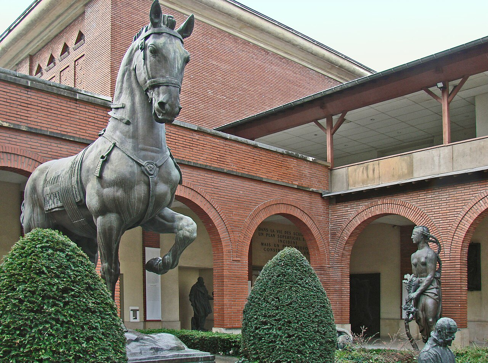

Fondation Louis Vuitton
Un programme d’expositions et une architecture contemporaine à considérer ensemble.
Explorer aussi hors de Paris
La région ne se résume pas aux musées de la capitale. Voici trois établissements aux collections distinctes, en Yvelines, Seine-et-Marne et Seine-Saint-Denis.
Musée d’Archéologie nationale
Vestiges et objets pour remonter les périodes de l’histoire du territoire.
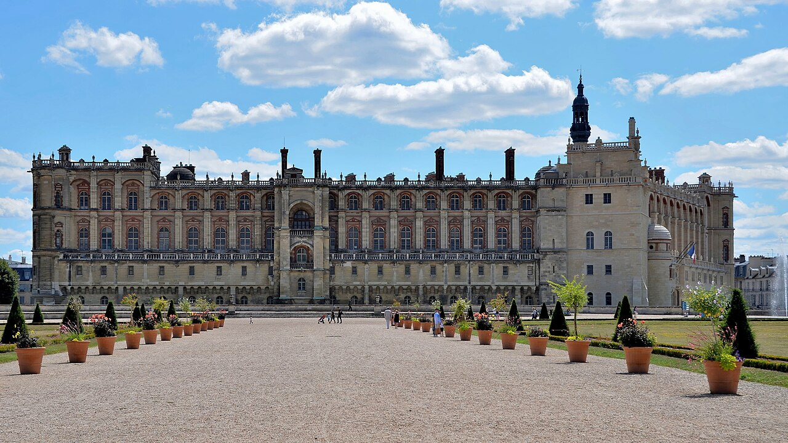
_-_Mus%C3%A9e_d%27arch%C3%A9ologie_nationale_-_48270309896.jpg){kind=link}
Musée de la Grande Guerre
Comprendre la Première Guerre mondiale à travers ses objets et ses traces.
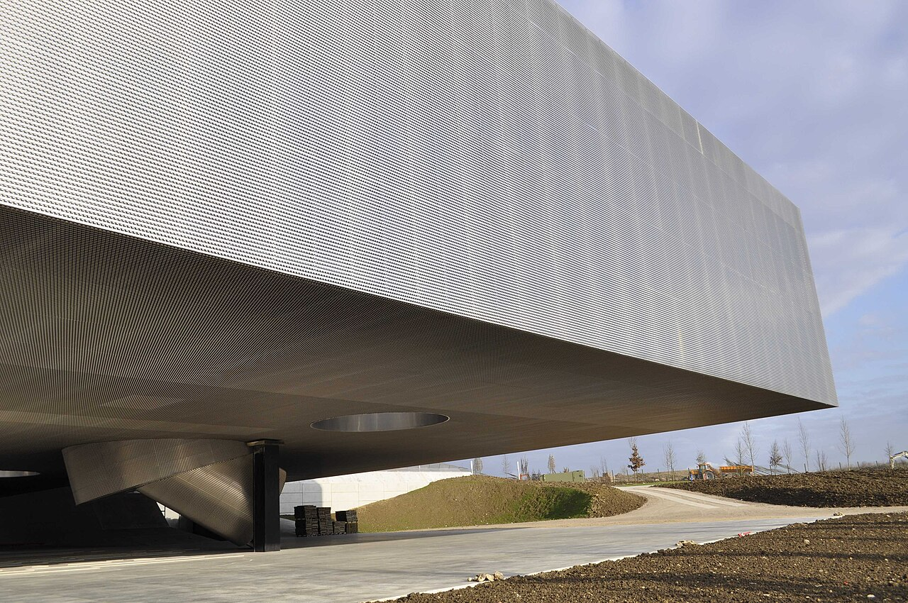

Musée de l’Air et de l’Espace
Découvrir l’histoire de l’aviation et des techniques spatiales.
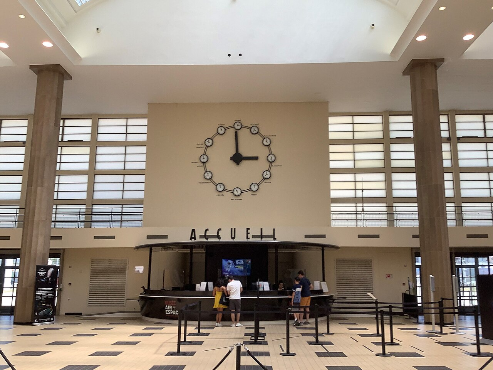

Comment faire votre sélection ?
Si vous disposez de peu de temps, partez d’une seule question : quelle collection souhaitez-vous comprendre ? Histoire parisienne, peinture d’une époque, art moderne et mode ne requièrent pas le même parcours. Vérifiez ensuite les conditions d’entrée et les salles accessibles directement sur le site du musée.
La sélection couvre maintenant quatre départements franciliens, mais pas encore toutes les collections de la région. Les musées des départements restants seront ajoutés après recherche, sans inventaire artificiel.
Références institutionnelles : Paris Musées et les sites officiels de chaque établissement. Sélection éditoriale du 23 octobre 2026 ; les conditions pratiques sont à confirmer.